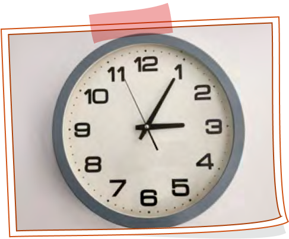

목차보기
교과서
쪽
이전목록
000
999
다음목록
생활 속 국어 활동
새롭게 보기, 다르게 보기
이렇게 활동해요.
1
학교에서 익숙하게
만나는 사물이나
풍경 정하기
2
고른 대상을
평소와 다른
각도에서 바라보기
3
찍은 사진에
어떤 의미가 있는지
생각해 보기
4
사진에 담긴 의미를
설명하는 글 쓰기
활동 예시
닫기
사진 붙이는 곳

내가 고른 사물은 교실에 걸린 시계다. 시계에 아주 가까이 다가가 시곗바늘을 들여다보니 동그란 숫자 판 위를 초침이 쉼 없이 돌아가는 모양이 마치 나의 일상 같기도 했다. 반복되는 것만 같지만 늘 새로운 시간을 알려 주는 시계처럼, 나의 시간도 새롭게 앞으로 나아가고 있을 거라는 생각이 들었다.
 생활 속 국어 활동
생활 속 국어 활동